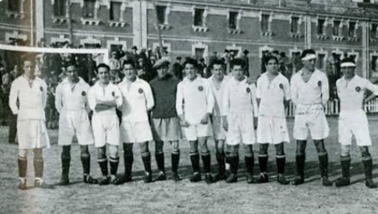
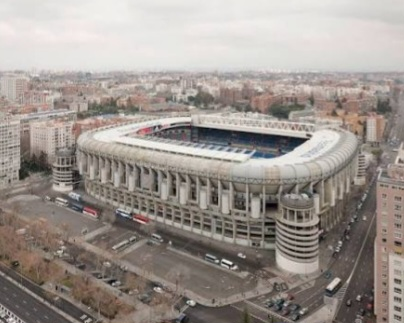
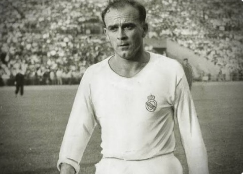
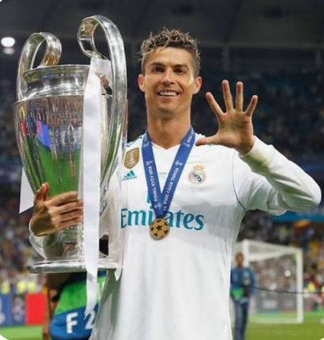
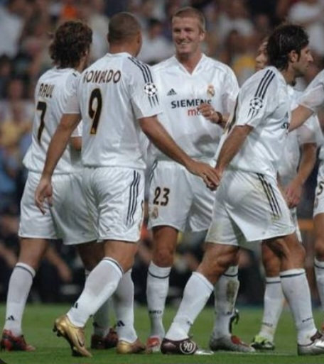

Origins and Foundation of Real Madrid (1902–1920)
Real Madrid Club de Fútbol was founded on March 6, 1902, in Madrid, Spain.
Originally known as Madrid Football Club, it emerged during the early expansion
of football across Europe. From the beginning, the club stood out for its ambition,
organization, and competitive spirit.
In 1920, King Alfonso XIII granted the club the royal title “Real,” officially
recognizing its importance. This royal connection shaped the club’s identity
and prestige for generations to come.

Growth in Spanish Football
Real Madrid was a founding member of La Liga in 1929 and quickly became
one of the strongest teams in Spain. Despite political instability in the country,
the club continued to grow structurally and competitively.
By the mid-20th century, Real Madrid had already established itself as a
national giant, setting the stage for international dominance.

The Santiago Bernabéu Vision
Santiago Bernabéu, president from 1943 to 1978, revolutionized the club.
His vision transformed Real Madrid into a modern sporting institution
with global ambition.
The Santiago Bernabéu Stadium, inaugurated in 1947, became a fortress
of European football and remains one of the most iconic venues in the sport.

European Domination
Real Madrid dominated European football in the 1950s by winning the first
five European Cups consecutively between 1956 and 1960.
Led by legends such as Alfredo Di Stéfano, Ferenc Puskás and Francisco Gento,
the club defined attacking football and set standards that remain unmatched.

Legends and Icons
Throughout its history, Real Madrid has been home to the greatest footballers
ever to play the game. Each era produced icons who shaped football globally.
Cristiano Ronaldo became the club’s all-time top scorer with 451 goals between
2009 and 2018, winning four Champions League titles and multiple individual awards.
👉 Want to learn more about Cristiano Ronaldo’s legendary career?
Click here to explore his full story

The Galácticos Philosophy
In the early 2000s, Real Madrid launched the Galácticos era, signing global
superstars like Zinedine Zidane, Luís Figo, Ronaldo Nazário and David Beckham.
This strategy combined sporting excellence with global marketing, making
Real Madrid the most recognizable football brand in the world.

Modern Champions League Era
Between 2014 and 2018, Real Madrid achieved one of the greatest feats in football
history by winning four Champions League titles in five seasons.
Under Zinedine Zidane, the club became the first team to win the Champions League
three times in a row in the modern format.
La Fábrica and Youth Development
Real Madrid’s youth academy, known as La Fábrica, has produced legendary players
such as Raúl, Iker Casillas, Dani Carvajal and many others.
The academy continues to develop elite talent, ensuring long-term success
and sustainability.
Rivalries and Global Influence
El Clásico against FC Barcelona is the most watched club football rivalry in history.
Matches between these two giants represent far more than football.
Real Madrid’s influence extends worldwide, with hundreds of millions of fans
across Europe, Asia, Africa and the Americas.
Financial Strength and Modern Identity
Real Madrid consistently ranks among the world’s richest football clubs,
according to Deloitte’s Football Money League.
The fully renovated Santiago Bernabéu Stadium represents the future of
sports infrastructure, hosting football, concerts and global events.
Values, Philosophy and the Future
Real Madrid is built on values of excellence, ambition, respect and unity.
The club’s philosophy emphasizes attacking football, resilience and
mental strength in decisive moments.
Looking forward, Real Madrid continues to invest in young talent,
innovation and global expansion, ensuring its position at the top
of world football for decades to come.
More than a football club, Real Madrid is a cultural institution,
a symbol of success, and a benchmark for sporting greatness.
Major Changes at Real Madrid – Xabi Alonso Departs, Álvaro Arbeloa Appointed Head Coach
Real Madrid’s recent run of matches has triggered significant changes behind the scenes.
While the results were not disastrous, the overall performances failed to meet the club’s
extremely high standards.
After internal discussions, the club made the difficult decision to part ways with
Xabi Alonso.
The departure was not based solely on results, but also on deeper issues within the squad.
According to sources close to the club, Xabi Alonso’s relationship with several key players
had deteriorated in recent weeks.
Tensions reportedly arose over tactical decisions, squad rotation and communication,
leading to a loss of confidence inside the dressing room.
While Alonso remains a respected club legend, Real Madrid’s management felt that the
growing disconnect between the coach and the players was beginning to affect performances
on the pitch.
At a club where harmony and authority are essential, this situation became unsustainable.
As a result, Álvaro Arbeloa was appointed as the new head coach.
Having worked successfully within Real Madrid’s youth system, Arbeloa knows the club’s identity,
values and expectations better than most.
Arbeloa is expected to focus on restoring unity within the squad,
improving defensive organization and implementing a faster, more aggressive transition game.
Early signs suggest a renewed sense of discipline and motivation among the players.
The upcoming matches will be crucial in determining whether this coaching change marks
the beginning of a new and successful chapter for Real Madrid.
Real Madrid 2025/26 – Current Squad, Form and Season Overview
The Real Madrid squad for the 2025/26 season is once again among the strongest in world football.
With a perfect mix of elite stars and young talent, expectations remain extremely high both domestically and in Europe.
The attacking line is led by
Kylian Mbappé
,
whose pace, finishing ability and constant movement have made him a decisive figure since his arrival.
His presence has completely changed the dynamic of Real Madrid’s offensive play.
In midfield, the team continues to benefit from a powerful blend of energy and intelligence.
Jude Bellingham remains a key leader, while Federico Valverde and Eduardo Camavinga provide intensity,
versatility and balance on both sides of the ball.
Defensively, the season has been challenging at times due to injuries and rotation,
but Real Madrid still ranks among the strongest defensive units in the league.
The back line has shown resilience, especially in high-pressure matches.
Overall, the team’s form has been slightly inconsistent, but the quality and depth of the squad
leave no doubt that Real Madrid has the potential to peak at the decisive stage of the season.